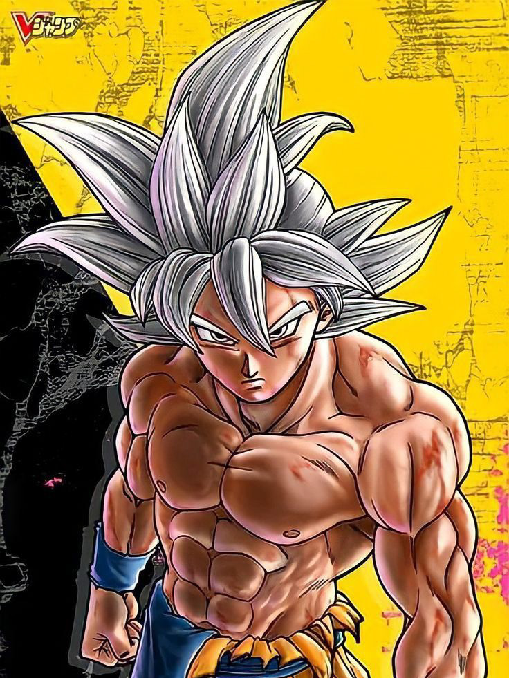
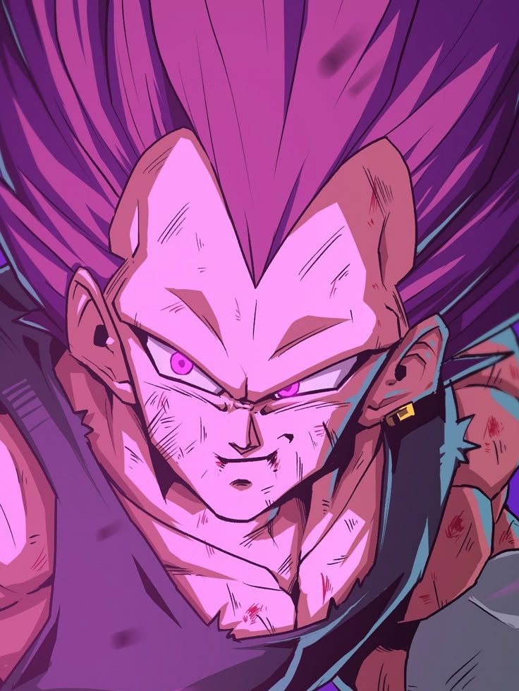
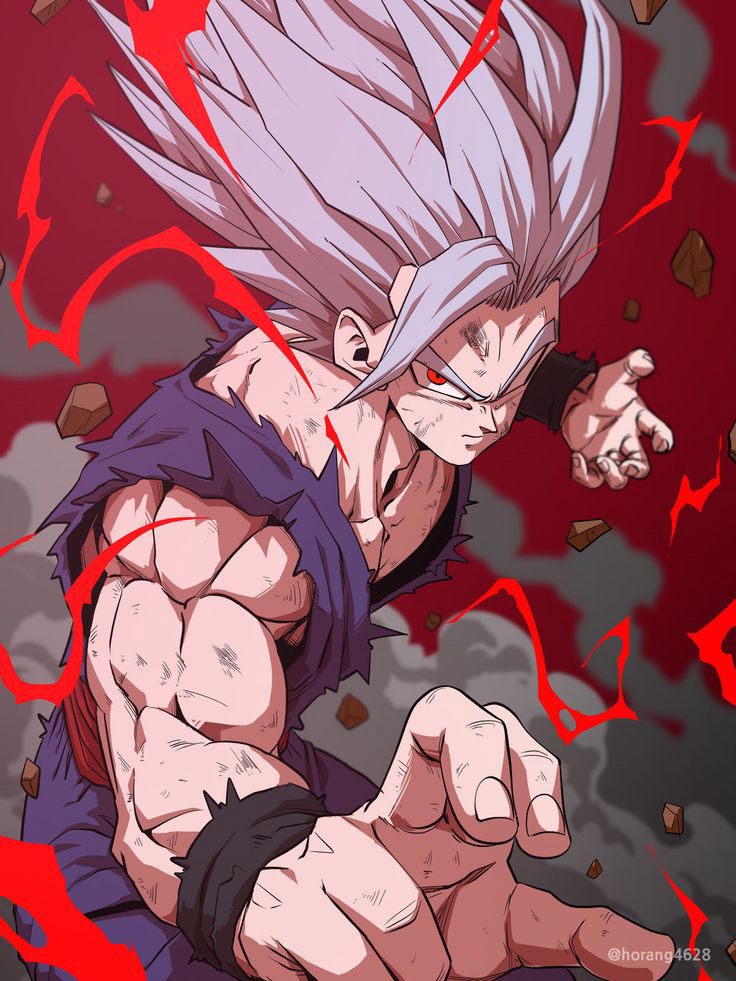
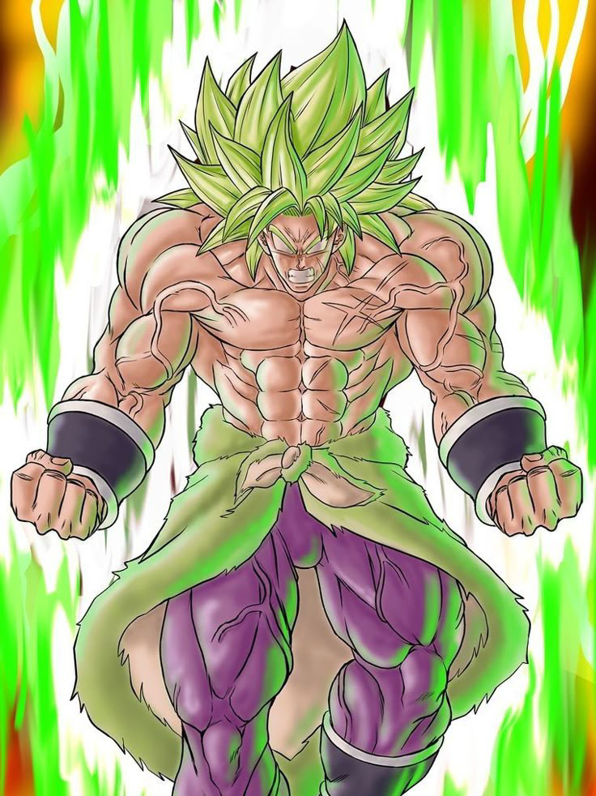
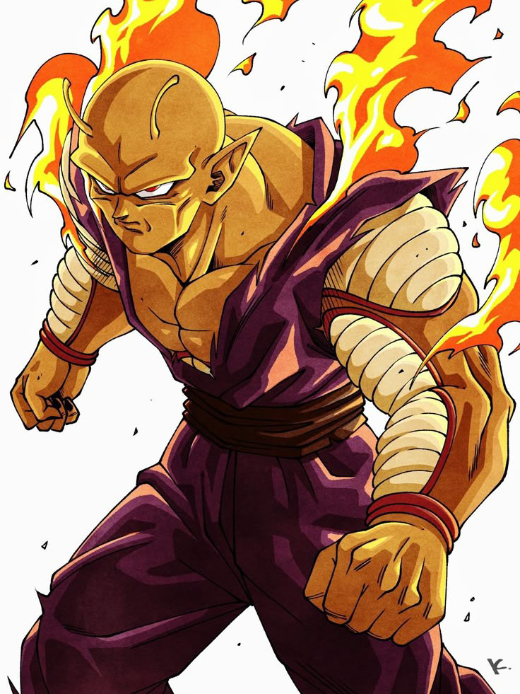

Goku Instinto Superior
Goku conseguiu essa forma depois de treinar com whis e aperfeiçoou essa técnica quando lutou contra Moro e Gás. Ela consiste em deixar com que todas as partes do corpo se movimentem por instinto próprio sem a necessidade de Goku ter que pensar em fazer isso, com isso seus ataques e esquivas ficam extremamentes mais eficientes e poderosos.
Vegeta Ego Superior
Vegeta usou essa forma pela primeira vez quando lutou contra Granolah, ele conseguiu esse poder após treinar com Bills, o Deus da destruição que ensinou a Vegeta como controlar o Hakai que é a energia dos deuses da destruição, essa forma além de deixar vegeta com todos os atributos muito superiores, dá a ele o poder de usar o Hakai a todo vapor podendo destruir e apagar qualquer coisa da existência, ele também ganha a habilidade de aumentar o poder conforme recebe danos, o que pode ser uma vantagem mas se ele exagerar pode acabar debilitado demais pra continuar lutando.
Gohan Beast
A forma Beast foi adquirida por Gohan após se enfurecer quando pensou que Piccolo tinha morrido lutando contra Cell Max, há poucas informações sobre como ela funciona e qual foi o requisito pra ela acontecer, porém Akira Toriyama disse em entrevista que a forma Beast é uma evolução da forma Ultimate (Mística), ela aumenta todos os atributos de Gohan fazendo ele chegar do nível de Goku quando usa o Instinto Superior, por ela ser muito poderosa Gohan precisou aprender a controlá-la e ainda assim não a controla 100%, o que pode fazer com que ele perca o controle se elevar demais o ki.
Broly Super Saiyajin
O Super Saiyajin de Broly é diferente de todos os outros, além de ter o cabelo esverdeado invés de loiro, ele ainda se fortalece ao decorrer da luta, fazendo com que o oponente tenha que acabar com a luta rapidamente ou Broly pode acabar se tornando superior, ele conseguiu essa forma após ver seu pai Páragus morto, o principal ponto fraco dessa forma é que ele não consegue controlar ela, o que pode fazer ele literalmente explodir se ficar furioso, atualmente no Mangá de Dragon Ball Super, Broly pela primeira vez se manteve no controle nesta forma, o que pode indicar que futuramente Broly pode finalmente dominar essa transformação.
Orange Piccolo
Piccolo consegue sua forma Orange após pedir para shenlong que libere seu poder oculto, após isso Piccolo ganha primeiro uma forma amarelada chamada de Awakening Power em mídias oficiais, e só quando está perdendo a luta contra Gamma 2 que Shenlong revela ter colocado um bônus no pedido de Piccolo e então o poder da forma Orange desperta deixando Piccolo com uma cor alaranjada, muito musculoso e maior, ele vence Gamma 2 com um único golpe, assim como a forma Beast de Gohan, não se sabe exatamente o que essa forma é e se algum outro Namekusejin já a conseguiu no passado, no Mangá Goku diz que sentiu o poder de Piccolo mesmo estando no planeta de Bills, o que pode indicar que o poder de luta de Piccolo está muito maior agora.